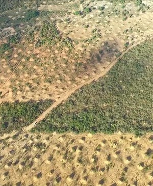
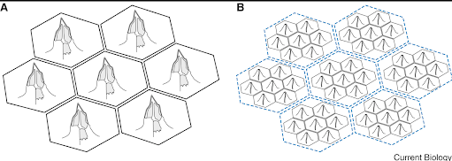
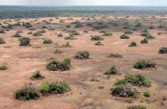
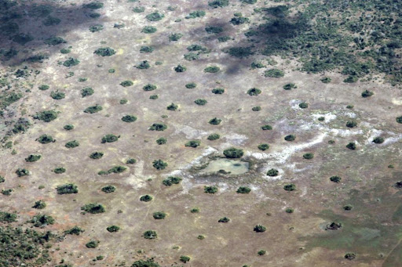
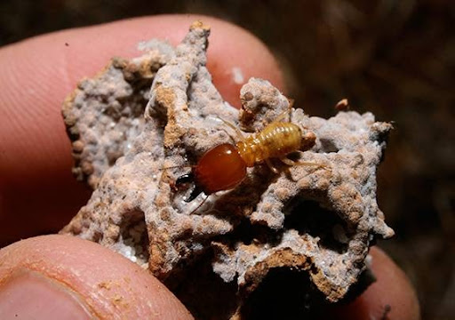
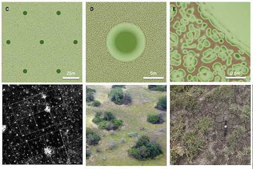

Pattern play by Termites
June 15, 2021 5:30pm IST Self-organisation is a significant interest in biology, which involves local interactions between individuals, molecules, cells and organisms leading to emergent patterns. It is this self-organisation that leads to the formation of regular patterns which could be found in both small scales and large scales ranging from cellular organisations to landscapes and sea-scapes [1]
Each pattern in nature has a specific role in revealing information of the various processes and their function.
One such example from nature, is the special pattern found in the relative spatial distribution of mounds in termite colonies.

In north-eastern Brazil, termite mounds are found in excess and due to termite foraging, they create an optimal hexagonal pattern such that every dirt mound has on average three to six neighbours.
The following picture shows termite territories formed from Interspecific competition. The honeycomb tessellation is generally not visible but inferred based on the mound distribution.

The general reason behind the formation of hexagonal patterning of termite mounds is the competition for resources between their colonies, which forces them to spread as far as possible to get the maximum amount of food [2].
In a recent study in Current Biology, Professor Stephen Martin and (his/their) colleagues revealed a different self-organising mechanism for Brazil dirt mounds whereby multiple architecturally simple dirt mounds are distributed hexagonally within one colony’s territory. At larger scales, even the territories could be hexagonally organized in response to intraspecific competition such that two termite-induced patterns coexist at two different scales [3].
When the hexagonal pattern arises from competition between colonies, the size of colony territories and the average inter-nest distance is determined by resource availability.
Another expedition was done by Princeton University’s assistant professor , Carolina Tanitra. Where they analysed and found out the relations existing between the vegetative patterns and the pattern of termite mounds which are abundant in the Savannah grasslands of Gorongosa National Park, Mozambique.
The satellite images of the termite mounds were collected and it was noticed that there was a pattern existing amongst the termite mounds. Surprisingly, after using a software called ‘Voronoi’, the averaged termite mound number around each termite mound was six (i.e. hexagonal packing!) and it is the most optimal packing existing in nature!

One possible explanation for such a regular pattern : Since termites are extremely territorial and they search for food on plant material outside their mound, they eventually encounter their neighbours and thus, it becomes a battleground. A boundary line is drawn between them.
The termites exhibit competitive behaviour as the small mounds always lose to the bigger mounds and the termite colonies of smaller mounds get killed. Thus the termite colonies’ competitive behaviour helps in optimising spaces and ensures that the sizes of termite mounds and relative distances from each other help in creating an optimal hexagonal space.

Termites create rich moist soil which encourages plant growth by making better the penetration of water and also they increase resource availability in and around the nest. This was proved by a research on fungus-growing termites from the genus Odontotermes. So, vegetation flourishes on and near termite mounds.
Thus, the termite mounds are islands of green on a drier and often more sparse background! Thus, spotting them would be an easier job from a bird's eye view.

The vegetation patterns of the savannah, when analysed mathematically, would reveal the fundamental pattern of the ecosystem. The above picture explains that termite mounds self-organise to form a pattern on the scale of tens of metres (top and bottom left). The dense vegetation on each mound (top and bottom centre) gradually thins, moving outward from the mound’s centre. Off the mounds, vegetation self-organised to form a pattern on the scale of centimetres (top and bottom right)[4].
Scientists at the Carnegie Institution's Department of Global Ecology, mapped more than 40,000 termite mounds over 192 square miles in the African savanna. Their study found that their size and distribution is linked to the vegetation and landscape patterns associated with annual rainfall [5].
Termite mounds help the existing vegetation patterns of the savannah grassland to delay the process of desertification by storing nutrients and moisture. Immediately after the precipitation, the process of re-vegetation could be noticed, by doing so, termite mounds help the landscape recover from droughts.
Mound-building termites in the study area of Kruger National Park in South Africa tend to build their nests in areas that are neither too wet nor too dry but are well-drained and on slopes of savanna hills above boundaries called seeplines [6].
According to the research conducted by Carnegie Airborne Observatory (CAO), understanding the patterns of the vegetation and the termite mounds over different moisture zones can help one project about how the landscape might change with climate change [7].
The importance of such a natural patterning technique should be realised as the work of termites in delaying the desertification could not be substituted by artificial methods by the team of ecologists and evolutionary biologists despite the existing modern technology. Thus, the hexagonal patterning of the termite mounds plays a major role in the conservation and delaying desertification and droughts!
References:
Related Articles
The Termite Mound
August 9, 2020
Can you imagine that a termite, which is barely the size of a fingernail, when coming together in a million or two, can build mounds that can reach a height of 17 feet or even more!? Termites live in big social colonies which include kings, queens, workers, and soldiers.

The Bee Dance
July 7, 2020
If you are a keen observer, then you must have seen honey bees (Apis sp.) waggling around. Ever wondered, what is the reason behind this? Is it just for fun? Or are the bees really inspired by Michael Jackson!? Well, these little creatures are much ...
Communication in Insects
August 29, 2020
For humans, it is easier to communicate with each other. We have different languages which we speak and sometimes translate so that people from other countries can also understand.